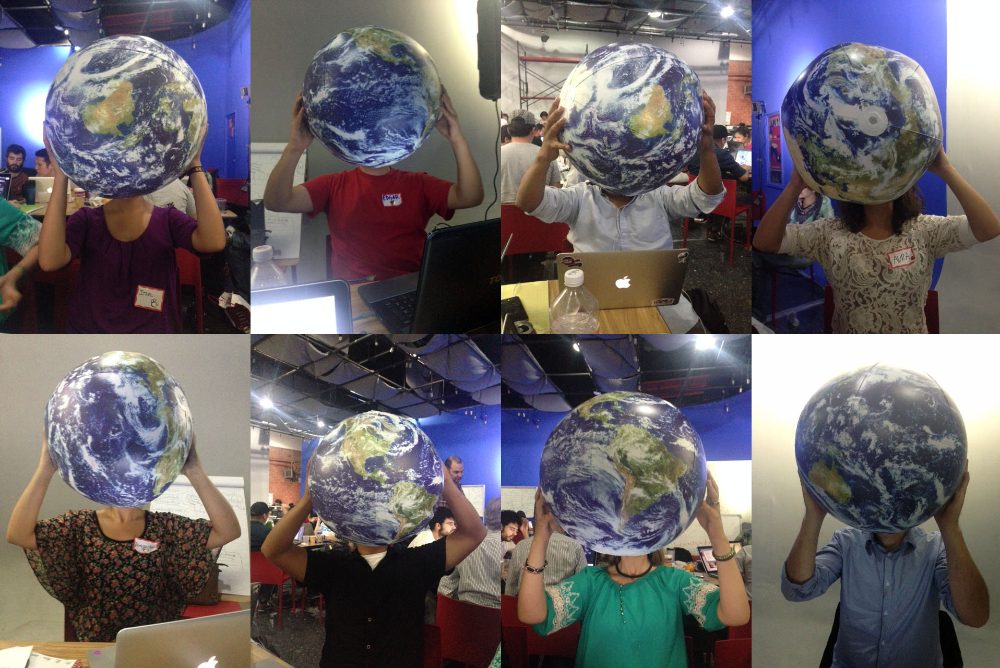

¿QUIÉNES SOMOS? 
Apenas nos conocimos en el #Migrahack en el DF y, sin pensarlo, comenzamos
a trabajar juntos en este proyecto de salud migrante. Somos programadores,
diseñadores, cartógrafos, biólogos, economistas y periodistas, todos aportando en
equipo, creyendo que debemos y podemos cambiar la realidad de nuestros migrantes.